Doo Nam observed that when he provided a little less ideal helix (i.g. one H-bond length within helix is rather long), then cryo_fit2 tends to "loosen/unwind" that "kink" area.
When he provided a longer distance_cut_n_o (i.g. 4~4.5, the default value is 3.5), the geometry of helix was kept well (it maintained the helical kink spot) like
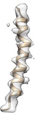
- For example, phenix.cryo_fit2 <user.pdb> <user.map> resolution=<reso> secondary_structure.protein.distance_cut_n_o=4.5
- For example, phenix.cryo_fit2 <user.pdb> <user.map> resolution=<x> map_weight_multiply=0.2.
- For example, flexibly fit with a 4 angstrom filtered map.
- Then with the resultant atomic model and a 2 angstrom filtered map, do flexible fitting.
- Then with the resultant atomic model and a non-filtered map, do final flexible fitting.
- Tools -> Volume Data -> Volume Viewer -> Tools -> Volume Filter -> (Set Width, e.g. 4,2) -> Filter
- File -> Save map as -> (name a filtered map) -> Save
- Alternatively, a user can try phenix.map_to_model instead.
- Note that these options do rigid-body fitting only. Therefore, it is useful for global fitting before cryo_fit2. When overall orientation is already well fitted, these often are not that useful for cryo_fit2.
Generally, cryo_fit2 which is followed by phenix.real_space_refine tends to maximize cc.
However, if there is a room/chance to idealize secondary structure further even after cryo_fit2, then cryo_fit2 + phenix.model_idealization + phenix.real_space_refine combination resulted in the maximum cc.
When the fitting needs to pass through a local minimum energetically for a perferct fit (for example, when hydrophobic interaction between helices hinders loop conformation change like
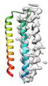
or when initial cc is too low (e.g < 0.2) like
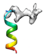
or when local sidechain fitting hinders global backbone fitting like
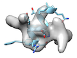
), running phenix.dock_in_map or UCSF Chimera's 'fit in map' before cryo_fit2 is recommended.
- Note that these options (phenix.dock_in_map or UCSF Chimera's 'fit in map') do rigid-body fitting only. Therefore, these are useful as global fitting before cryo_fit2. However, when overall orientation is already well fitted, often these are not that needed before cryo_fit2.
When fitting protein molecule to a map requires a significant conformational change (for example, half of the molecule is already fitted and the other half is not fitted like
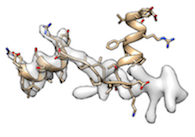
),
- enforcing stronger map_weight (higher map_weight_multiply) tends to fit better (obviously).
- For example, phenix.cryo_fit2 <user.pdb> <user.map> resolution=<x> map_weight_multiply=15
- At this high map_weight_multiply, the secondary structures may be broken (slightly or seriously) right after cryo_fit2 running.
- However, phenix.model_idealization which is followed by phenix.real_space_refine perfectly restored ideal secondary structures and fitted very well like
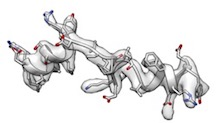
(cc_box: 0.96).
- However, too high map_weight_multiply tends to misfit totally.
- For example, phenix.cryo_fit2 <user.pdb> <user.map> resolution=<x> map_weight_multiply=1000 misfitted like
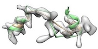
(yellow: after cryo_fit2, green: after cryo_fit2 which is followed by model_idealization).
- Lowering many sigma values was expected to prevent this situation. However, lowering many sigma values prolongs cryo_fit2 running time too much.
Alternatively, remodel loop with phenix.fit_loops helps cc boost.
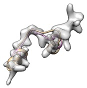
(yellow: user input, cc_mask: 0.43, cc_box: 0.58; pink: after fit_loops, cc_mask: 0.47, cc_box: 0.58)
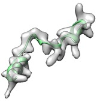
(green: after fit_loops & cryo_fit2, cc_mask: 0.83, cc_box: 0.90)
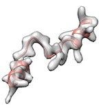
(green: after fit_loops, cryo_fit2, model_idealization & real_space_refine, cc_mask: 0.92, cc_box: 0.97)
Alternatively, HE_top_out=True sometimes (not always) boosts cc well even with moderately high map weight (confirmed with 6 benchmark cases).
- For example, phenix.cryo_fit2 <user.pdb> <user.map> resolution=<x> map_weight_multiply=10 HE_top_out=True
- HE_top_out=True uses top_out potential (rather than harmonic potential) to helix (H) and sheet (E) for more flexible fitting.
When Doo Nam tried to fit a very small molecule (i.e. 11 residues long like
), both phenix.real_space_refine and cryo_fit2 couldn't fit to cryo-EM map.
The reason of these failures is that effect of sidechains is too large (in this kind of small molecule), so that global fitting is hindered.
Doo Nam confirmed that phenix.dock_in_map fits globally much better for this case.
- For example, phenix.cryo_fit2 nproc=40 model.pdb model.map resolution=3
Although pdb text files show similar SCALES, input (before cryo_fit2) and output (after cryo_fit2) pdb files may show different molecule sizes in Pymol when Doo Nam used map that was made from phenix.map_box
Troubleshooting is ongoing.
In the meantime, please use UCSF Chimera to visualize bio-molecules instead.
- For example, phenix.model_idealization <user.pdb> <user.map that was used for cryo_fit2> (resolution information is not required)
When a user sees a message like
- For example, Doo Nam observed this message when he provided XXX in residue names instead of ALA, TYR, PHE etc.
- To prevent this situation, he needed to provide sequence information when he ran phenix.fit_loops,
- For example, phenix.fit_loops <pdb file> <mrc file> <fasta file> start=<> end=<>
- For example, Doo Nam uses either EMDB reported resolution (preferred) or phenix.mtriage derived resolution to properly run cryo_fit2.
- For example, when Doo Nam saw an error with resolution=3, then using resolution=5 often solved the problem.
"Sorry: Crystal symmetry mismatch between different files.
(378, 378, 378, 90, 90, 90) P 1
(103.95, 91.35, 89.25, 90, 90, 90) P 1"
The first line (378, ...) shows unit cell parameters from model.
The second line (103.95, ...) shows unit cell parameters from map.
- Just erase CRYST1 header information from an input pdb file. Then, provide that input file into cryo_fit2.
- Cryo_fit2 will automatically extract CRYST1 header from map (both from original map and phenix.map_box derived map), and prepend (write at the first line) to the pdb file.
- (Alternatively) Just leave correct CRYST1 header only in an input pdb file.
- For example, when a wrong CRYST1 header exists above a correct CRYST1 header, above error message appeared.
- For example, cryo_fit can model transition between map conformation 1 and 2.
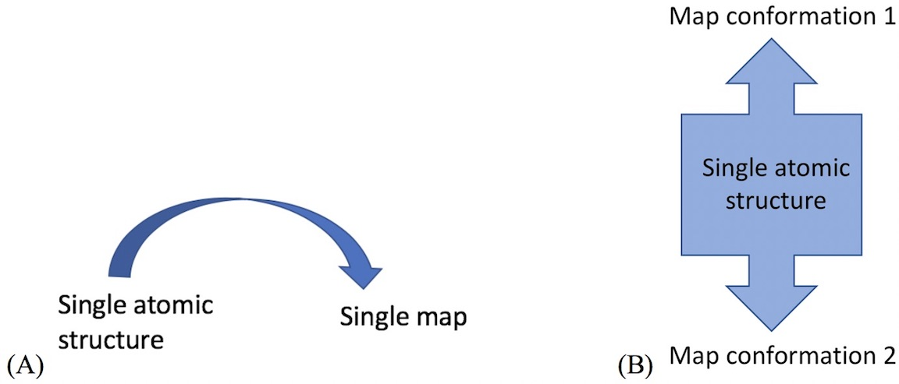
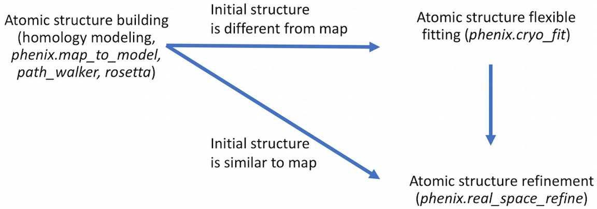
- For example,
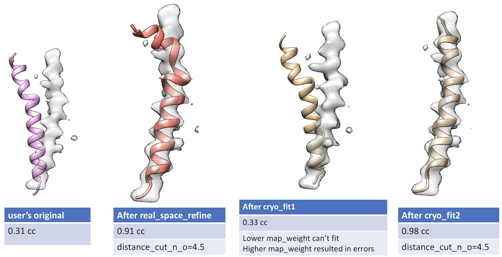
- Unlike cryo_fit1 that uses gromacs, cryo_fit2 runs within PHENIX suite. Therefore, it does not require gromacs installation and is faster to execute.